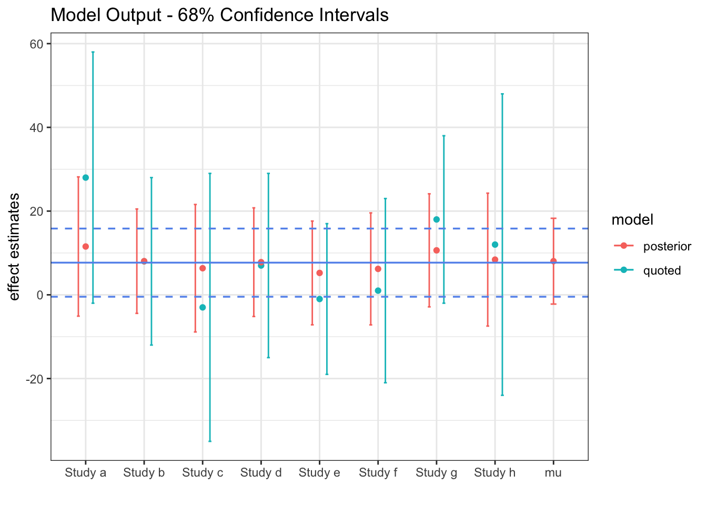

Last updated: 2020-04-28
Checks: 7 0
Knit directory: research/
This reproducible R Markdown analysis was created with workflowr (version 1.6.1). The Checks tab describes the reproducibility checks that were applied when the results were created. The Past versions tab lists the development history.
Great! Since the R Markdown file has been committed to the Git repository, you know the exact version of the code that produced these results.
Great job! The global environment was empty. Objects defined in the global environment can affect the analysis in your R Markdown file in unknown ways. For reproduciblity it’s best to always run the code in an empty environment.
The command set.seed(20200406) was run prior to running the code in the R Markdown file. Setting a seed ensures that any results that rely on randomness, e.g. subsampling or permutations, are reproducible.
Great job! Recording the operating system, R version, and package versions is critical for reproducibility.
Nice! There were no cached chunks for this analysis, so you can be confident that you successfully produced the results during this run.
Great job! Using relative paths to the files within your workflowr project makes it easier to run your code on other machines.
Great! You are using Git for version control. Tracking code development and connecting the code version to the results is critical for reproducibility.
The results in this page were generated with repository version 3a2f5d9. See the Past versions tab to see a history of the changes made to the R Markdown and HTML files.
Note that you need to be careful to ensure that all relevant files for the analysis have been committed to Git prior to generating the results (you can use wflow_publish or wflow_git_commit). workflowr only checks the R Markdown file, but you know if there are other scripts or data files that it depends on. Below is the status of the Git repository when the results were generated:
Ignored files:
Ignored: .DS_Store
Ignored: .RData
Ignored: .Rhistory
Ignored: .Rproj.user/
Ignored: analysis/.Rhistory
Note that any generated files, e.g. HTML, png, CSS, etc., are not included in this status report because it is ok for generated content to have uncommitted changes.
These are the previous versions of the repository in which changes were made to the R Markdown (analysis/hierarchical.Rmd) and HTML (docs/hierarchical.html) files. If you’ve configured a remote Git repository (see ?wflow_git_remote), click on the hyperlinks in the table below to view the files as they were in that past version.
| File | Version | Author | Date | Message |
|---|---|---|---|---|
| Rmd | 3a2f5d9 | DBomber60 | 2020-04-28 | u |
| html | 457c931 | DBomber60 | 2020-04-27 | Build site. |
| Rmd | 988796f | DBomber60 | 2020-04-27 | yo |
| html | b9725de | DBomber60 | 2020-04-27 | Build site. |
| Rmd | dfde6d8 | DBomber60 | 2020-04-27 | hi |
| html | da38a3d | DBomber60 | 2020-04-27 | Build site. |
| Rmd | 2fe85d2 | DBomber60 | 2020-04-27 | hi |
| html | 66f5f07 | DBomber60 | 2020-04-27 | Build site. |
| Rmd | e71bda3 | DBomber60 | 2020-04-27 | hi |
| html | b1febd3 | DBomber60 | 2020-04-25 | Build site. |
| Rmd | e5a3a25 | DBomber60 | 2020-04-25 | u |
| Rmd | a847f09 | DBomber60 | 2020-04-25 | u |
| html | a847f09 | DBomber60 | 2020-04-25 | u |
| html | 5d743d6 | DBomber60 | 2020-04-07 | Build site. |
| Rmd | 457280d | DBomber60 | 2020-04-07 | hierarchy |
| html | edf060d | DBomber60 | 2020-04-06 | Build site. |
| Rmd | a3a9fc4 | DBomber60 | 2020-04-06 | para |
| html | daeaf75 | DBomber60 | 2020-04-06 | Build site. |
| Rmd | f139f32 | DBomber60 | 2020-04-06 | init |
| html | befc64c | DBomber60 | 2020-04-06 | Build site. |
| Rmd | e28a21b | DBomber60 | 2020-04-06 | test |
Suppose we have results from several experiments on the effect of a certain drug. How should we use this data to estimate the drug’s effect? What is the error of the estimate?
This is a specific example of a much more general question: how do we incorporate the results of scientific research into our own research?
To make this concrete, let us consider the following data set regarding the effect of a drug.
| Study | effect | sigma |
|---|---|---|
| Study a | 28 | 15 |
| Study b | 8 | 10 |
| Study c | -3 | 16 |
| Study d | 7 | 11 |
| Study e | -1 | 9 |
| Study f | 1 | 11 |
| Study g | 18 | 10 |
| Study h | 12 | 18 |
Choose the best study. Clearly this is not optimal since you are not making use of the information you have; however, very smart people choose this option all the time.
Use some results from statistics class.
Our data consists of \((\bar{y}_j, \sigma_j)\) for \(j \in 1,...,J\), where \(\bar{y}_j\) is the mean effect from experiment \(j\), and \(\sigma_j\) its standard error. Let us consider the following two models,
\[\begin{align} \text{Model 1: }\bar{y}_j &\underset {ind}{\sim} N(\mu, \sigma_j) \\ \text{Model 2: }\bar{y}_j &\underset {ind}{\sim} N(\theta_j, \sigma_j) \end{align}\]Conceptually, Model 1 assumes that each experiment provides an independent estimate of the drug’s true effect, \(\mu\). Under this model, we can obtain an estimator \(\hat{\mu}\) by maximizing the likelihood of our data. The variance can be derived similarly, leading to:
\[\begin{align} \hat{\mu} &= \underset{\mu}{\arg\max} \prod_j (2 \pi \sigma_j^2)^{-1/2} \exp \bigg(- \frac{( \bar{y}_j -\mu )^2 }{2 \sigma_j^2} \bigg) \\ &= \frac{\sum_j \bar{y}_j/ \sigma_j^2 }{\sum_j 1/ \sigma_j^2} \end{align}\]mu_hat_pooled = sum(effect/sigma^2)/sum(1/sigma^2) # 7.7
sigma_hat_pooled = (1/sum(1/sigma^2))^.5 # 4.1This seems okay. However, because the experimental conditions, for example the age or other attributes of the test subjects, length of the experiment and so on, are likely to affect the results, it does not feel right to assume the are no differences at all between the groups - an assumption we make by assuming a common \(\mu\). In statistician jargon, we would like to acknowledge the unobserved heterogeneity across groups (experiments).
While we are uncomfortable treating the effect parameter estimated by each experiment as being exactly equal (\(\mu\)), it also does not seem right to treat them as independent parameters, which would be the implied assumption under the Model 2.
To further illustrate the problems with these approaches, consider the following statements:
Is there a middle ground?
Hierarchical modelling!
The idea is to break the model down into smaller, easier understood pieces (levels). When put together, these levels describe the joint distribution of data and parameters in a more realistic way. In this case, we can think about study level parameters on one level (i.e., we can denote \(\theta_j\) as the true effect of study \(j\)) and the the sampling distribution of the study-specific data on another level. Furthermore, we can assume the study parameters are a sample from an underlying population distribution, and the variance of this population distribution, which is estimated from the data, determines how much the parameters of the sampling distribution are shrunk towards the common mean.
\[\begin{align} \theta_j &\sim N(\mu, \tau) \\ \bar{y}_j \vert \theta_j &\sim N(\theta_j, \sigma_j) \end{align}\]In order to make this hierarchical model a Bayesian hierarchical model, we also specify a prior distribution for the hyperparameters, \(p(\mu, \tau)\). A key conceptual difference between this model setup and those in Option B is the treatment of parameters \((\theta_1,...,\theta_J,\mu,\tau)\) as random variables. This is the defining characteristic of Bayesian statistics. Despite the conceptual newness, this framework subsumes the previous two.

The solid blue line represents the fixed \(\mu\) of Model 1, along with its \(95\%\) confidence band. The red lines are our estimate from the hierarchical model of the true study effects, \(\theta_i\). Although the \(\mu\) confidence interval corresponds pretty well with the blue lines, it is slightly wider.
Biobot Analytics previously measured sewage concentrations of analytes linked with opioid usage to track overdoses and help inform policy to mitigate this public health crisis. Now, they measure the concentration of the coronavirus in sewage and use this data to estimate the number of infected people, here is their preprint.
Wastewater surveillance may represent a complementary approach to measure the presence and even prevalence of infectious diseases when the capacity for clinical testing is limited.
How are they estimating the number of infected people? This equation:
\[\begin{align*} i_j &= \frac{\text{total virus copies at }WWTP_j \text{ per day}}{\text{expected virus copies per infected person per day}} \\ &= \frac{\text{sample virus conc.$_j$ (copies/mL)} \times \text{flow (mL/day)}}{\underbrace {\text{expected virus copies per infected stool (copies/mL)}}_{V} \times \text{stool (mL/day/person)}} \\ &= \frac {s_j f}{V p} \end{align*}\]How do we quantify the uncertainty in this estimate? Each term here is subject to a lot of variability. The popular opinion is that \(V\) is the most uncertain term. Fortunately, scientists are doing research on this variable at a crazy speed. Here is one example. How to synthesize all of this work and use it to estimate uncertainty in \(i_j\)? The exact method I just showed with the slight added complexity that \(V\) is not \(\sim N\).
Once you have data across many wastewater treatment plants, how can you combine all of this data? Hierarchical model. Suppose \(\theta\) is the true infection rate across the US and \(K\) is a mapping matrix.
\[\begin{align*} \theta &\sim p(\cdot) \\ i_j | \theta, \epsilon_j &\sim p(f(K(\theta), \epsilon_j) \end{align*}\]
sessionInfo()R version 3.6.2 (2019-12-12)
Platform: x86_64-apple-darwin15.6.0 (64-bit)
Running under: macOS Catalina 10.15
Matrix products: default
BLAS: /Library/Frameworks/R.framework/Versions/3.6/Resources/lib/libRblas.0.dylib
LAPACK: /Library/Frameworks/R.framework/Versions/3.6/Resources/lib/libRlapack.dylib
locale:
[1] en_US.UTF-8/en_US.UTF-8/en_US.UTF-8/C/en_US.UTF-8/en_US.UTF-8
attached base packages:
[1] stats graphics grDevices utils datasets methods base
other attached packages:
[1] knitr_1.27 forcats_0.4.0 stringr_1.4.0 dplyr_0.8.3
[5] purrr_0.3.3 readr_1.3.1 tidyr_1.0.2 tibble_2.1.3
[9] ggplot2_3.2.1 tidyverse_1.3.0 workflowr_1.6.1
loaded via a namespace (and not attached):
[1] tidyselect_1.0.0 xfun_0.12 haven_2.2.0 lattice_0.20-38
[5] colorspace_1.4-1 vctrs_0.2.2 generics_0.0.2 htmltools_0.4.0
[9] yaml_2.2.0 rlang_0.4.4 later_1.0.0 pillar_1.4.3
[13] withr_2.1.2 glue_1.3.1 DBI_1.1.0 dbplyr_1.4.2
[17] modelr_0.1.5 readxl_1.3.1 lifecycle_0.1.0 munsell_0.5.0
[21] gtable_0.3.0 cellranger_1.1.0 rvest_0.3.5 evaluate_0.14
[25] labeling_0.3 httpuv_1.5.2 fansi_0.4.1 highr_0.8
[29] broom_0.5.4 Rcpp_1.0.3 promises_1.1.0 backports_1.1.5
[33] scales_1.1.0 jsonlite_1.6 farver_2.0.3 fs_1.3.1
[37] hms_0.5.3 digest_0.6.23 stringi_1.4.5 grid_3.6.2
[41] rprojroot_1.3-2 cli_2.0.1 tools_3.6.2 magrittr_1.5
[45] lazyeval_0.2.2 crayon_1.3.4 whisker_0.4 pkgconfig_2.0.3
[49] xml2_1.2.2 reprex_0.3.0 lubridate_1.7.4 rstudioapi_0.10
[53] assertthat_0.2.1 rmarkdown_2.1 httr_1.4.1 R6_2.4.1
[57] nlme_3.1-142 git2r_0.26.1 compiler_3.6.2